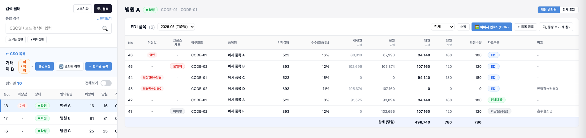
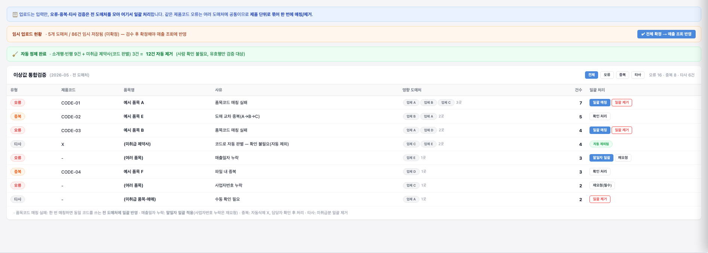

5대 검증 기준을 스킬 지침으로
요구에 없던 자동승인 기능을 원문과 대조해 삭제하고 검수 지침을 보완했습니다.
검증 기준과 사례 보기조명호 · 서비스 기획 PM
제약 유통 ERP 18개 업무 영역을 단독 기획하며
검증 단위와 구축 순서처럼
일의 구조를 바꾸는 판단을 했습니다.
요구 정의 → 화면·정책 → PRD·프로토타입 → 개발 전달
당월 수량과 확정수량을 나누고, 증빙은 별도 창에서 대조하게 했습니다.
프로토타입 일부
AI 산출물을 원문과 대조하는 검수 기준을 만들고,
문서의 출처를 함께 답하는 슬랙 Q&A 봇을 구성했습니다.
요구에 없던 자동승인 기능을 원문과 대조해 삭제하고 검수 지침을 보완했습니다.
검증 기준과 사례 보기출처 표시·추정 답변 금지를 적용한 슬랙 Q&A 봇을 팀원들이 썼고, 옆 팀에는 전용 봇을 따로 만들어 제공했습니다. AI 스킬은 대표 포함 PM 4명이 사용한 뒤 사내 AX 담당자에게 이관했습니다.
팀이 서로 다른 답을 알고 있다면?01프로젝트 개요
요구 정의부터 정책·화면 설계, 프로토타입 제작, 개발 전달까지 기획했습니다.
아래는 그중 EDI·매출자료 검증 흐름과 입력·미확정 자료 처리 기준, 구축 순서를 조정한 사례입니다.
기존 흐름기획한 흐름
02문제 발견
거래처 자료는 이메일·우편·카카오톡으로 내부 실무자에게 전달됐습니다. 실무자가 파일을 취합하고 엑셀로 정리해 입력하는 과정에서 자료 중복·누락과 잘못 전달된 자료를 확인해야 했습니다.
EDI 작업은 여러 메뉴에 흩어져 있었고, 입력값이 틀렸는지 원본 자료에 문제가 있는지 확인하려면 자료를 다시 대조해야 했습니다. 매출자료에서는 같은 제품코드 오류가 여러 업체에 반복됐습니다.
03판단과 설계
웰던 · 매출자료 검증 · 판단 사례 01
확인 단위
업체별오류별
발견 시점
정산할 때업로드할 때
기존 · 업체별 검증
같은 오류를 업체 수만큼 반복 확인
미매칭 자료는 정산에서 빠진 뒤 금액 대조로 발견 → 다음 달 이후 반영
설계 · 오류별 통합 검증
같은 오류는 한 번에 판단
업로드할 때 미매칭 항목을 표시 → 보완 요청을 앞당김
사업자번호·매출일자 누락, 제품 매칭 실패를 유형별 건수로 표시하고 영향 업체와 오류 사유를 보여줬습니다. 일괄 매칭·자료 재요청·중복 확인으로 연결하고, 자료 보완이 필요하면 도매업체에 다시 요청하도록 했습니다.
같은 오류의 업체별 반복 처리 건수, 미매칭 발견부터 보완 요청까지 걸린 시간, 다음 달 이후로 이월된 건수
웰던 · ERP 구축 순서 · 판단 사례 02
먼저 만든 기능
마스터데이터정산
판단 근거
처음 가정실무 구조 확인
처음 가정 · 마스터데이터 중심
마스터데이터 화면부터 만든다
확인한 업무 구조 · 정산 자료가 출발점
정산 흐름부터 구체화한다
같은 판단을 적용한 요청 · 병의원 통합 조회
EDI 수신 → 심평원 검증 → 마스터데이터 등록은 자료 처리 흐름입니다. 정산 기능을 먼저 구축했다는 것은 마스터데이터 없이 정산한다는 뜻이 아닙니다.
마스터데이터 구축 단계에서 생긴 구조 변경·재작업 건수, 계획 대비 정산 기능 일정
웰던 · EDI 증빙 대조 · 판단 사례 03
증빙 확인 방식
모달별도 창
수량 값
한 칸수신값·확정값 분리
검토한 대안 · 모달
증빙이 작고, 입력값을 가린다
선택한 방식 · 별도 창
원본과 입력값을 나란히 본다
원본 증빙 이미지에서 OCR로 품목·수량을 읽어 자동 입력하고, 실무자가 대조해 보정·확정하는 흐름으로 정리했습니다. 여러 메뉴에 흩어진 EDI 작업은 거래처 → 병의원 → 품목 순으로 탐색하며 대조·보정·확정하도록 연결했습니다.
웰던 · EDI 입력 경로 · 판단 사례 04
직접 입력 · 수기·포털
잘못된 입력을 예방
외부 자료 · OCR·파일 업로드
들어온 뒤 대조
EDI 자료가 들어오는 경로
직접 입력 · 수기·포털
사용자가 고를 수 있는 품목을 미리 제한할 수 있음
예방 · 틀린 품목을 고를 수 없게
외부 자료 · OCR·파일 업로드
외부에서 들어온 품목은 허용 여부를 대조해야 함
대조 · 들어온 뒤 허용 여부 확인
기존에는 거래처 자료가 이메일·우편·카카오톡으로 내부 실무자에게 전달됐습니다. 자료 전달 경로를 포털로 모으고, 거래처가 직접 자료를 업로드·확인하게 했습니다. 내부 실무자는 전달받은 파일을 다시 취합·입력하는 대신 자료를 대조하고 보정·확정하는 역할로 나눴습니다.
웰던 · 미확정 매출자료 · 판단 사례 05
미등록 약국
자동 확정가등록 후 확인
중복 의심 행
자동 삭제표시 후 담당자 판단
확인이 필요한 매출자료
미등록 약국
신생 약국이거나, 실제 거래처인데 정보가 갱신되지 않았을 수 있음
중복 의심 행
날짜·제품·약국·수량이 같아도 실제 중복이라고 단정할 수 없음
04산출물과 개발 전달
재구성 자료
본인 역할 대조 화면 대안 검토·기획, 고객사 합의, PRD·프로토타입 개발 전달. 제품 디자인과 개발 구현은 협업 담당자가 수행했습니다.
OCR로 읽어온 품목·수량을 원본과 비교하는 입력 작업
품목 A · 수량 120
품목 B · 수량 80
작은 모달 대신 넓은 영역에서 원본 내용을 확인
회의 약 20회분의 결정을 메뉴별 결정로그로 재정리해 PRD 기준으로 삼았고, 퇴사 후에도 팀이 이전 결정을 찾아보는 데 쓰고 있습니다.
EDI는 수신값과 확정값의 의미를 PRD에, 매출자료는 업체를 분리하지 않고 오류를 모아 검증하는 방향을 결정로그에 남겼습니다. 아래 발췌는 앞의 화면 흐름과 연결되는 근거입니다.
결정로그“일괄 + 사후검증(업체 분리 X), 오류 유형별 건수, 중복 의심만 표기”
260605 · 도매 매출 관리 원문 일부
EDI PRD당월수량은 수신한 값, 확정수량은 증빙 대조 후 확정한 값으로 구분했습니다. SCR-EDI-001로 화면 기능을 정리했습니다.
확인한 문서는 초안 상태입니다.
프로토타입에서는 등록·수정·권한·입력값의 정상 동작 조건을 정했습니다. AI가 브라우저를 조작해 입력·클릭과 결과를 확인하는 방식과 제가 직접 눌러보는 방식을 함께 사용하고, 실패한 부분은 수정 후 다시 확인했습니다.
국세청 API를 직접 호출해 사업자 상태와 응답 데이터를 확인하고, 개발자의 테스트 결과를 함께 검토했습니다.
병의원·약국 등록에서 외부 조회값을 자동 입력하는 경로와 조회 결과가 없을 때 직접 입력하는 경로를 나눴습니다. 외부의 개폐업 상태는 ERP 내부의 활성·비활성 상태와 구분했습니다.
재구성 샘플 · 개별 정책의 근거는 위 PRD·결정로그 발췌를 확인하세요.
개요 → 범위 → 요구사항 → 화면 목적 → 개념 정의 → 시나리오 → 정책 → 데이터·연동 → 필드 상세 → 미결
화면 식별자(SCR-ID)를 기준으로 요구사항·정책·필드·미결 사항을 묶고, 고객 요청과 기획자의 해석·제안을 출처로 구분하는 구성입니다.
기존 약국 관리 프로토타입의 조회·행 선택·등록·상세·수정 화면 전환을 확인할 수 있습니다. EDI·매출 검증과는 별도 화면 사례입니다.
화면 시연용 데모 · 더미 데이터 · 실제 저장·외부 연동 없음
05검토 결과
현업 리뷰에서 EDI 수신·입력·보정·확정을 한 화면에서 처리하는 구성에 긍정적인 반응을 받았고, 추가 피드백을 화면과 명세에 반영했습니다.
퇴사 후에도 작성한 PRD를 기준으로 개발이 이어지고 있습니다.
프로젝트 상태: 기획·구축. 출시 후 사용 효과를 측정한 사례는 아닙니다.
산출물 검수 기준을 먼저 세우고, 회의 기록에서 PRD·프로토타입으로 이어지는 작업과 프로젝트 지식 조회에 AI를 적용했습니다.
01 품질 통제
AI 산출물 처리
그대로 확정원문 대조 후 확정
스킬 지침에 반영
5대 검증 기준
실제로 잡아낸 사례
그 결과 만든 5대 검증 기준
“출처가 표기된 내용이 실제 소스 문서의 해당 부분과 일치하는가?”
spec-review · 2026.05.19 · 원문 대조 절차를 명시한 실제 지침
02 기획 생산
작업 순서
바로 작성근거 먼저 정리
반복 업무 자동화 · PM 챕터에 공유
커스텀 AI 스킬 10종
대표 포함 PM 4명 실사용 · 퇴사 후 사내 AX 담당자에게 이관
초기 · 요구에서 바로 명세 작성
예: 모달로 구상한 입력 방식이 새 페이지로 표현됨
바꾼 순서 · AI가 참고할 근거부터
AI가 만든 것
회의록 · PRD 초안 · 프로토타입
제가 판단한 것
모달·아코디언·조회 흐름이 기획 의도에 맞는지 판단해 수정
STT 녹취록·녹음·메모를 구글드라이브에 모으고 Claude로 회의 내용을 정리해 노션 회의록을 작성했습니다. 프로덕트 디자이너는 Figma에서 화면을 구체화했습니다. 회의 준비·정리, 명세 작성·검수, QA·리스크 점검 등 커스텀 스킬 10종을 구성하고 PM 챕터에 공유했습니다.
03 팀 활용
슬랙 Q&A 봇 사용
우리 팀 + 옆 팀
팀원들이 사용 · 옆 팀에는 전용 봇을 따로 구성
반복 기획 업무 자동화 · 본인 업무 시간
약 40% 감소
약 한 달간 도입 전후 직접 비교 · AI 결과 검수·수정 시간 포함
문제
구성
회의록 정리·메뉴별 PRD 작성·프로토타입 재정립 등에 AI를 적용하고, 약 한 달간 도입 전후의 본인 업무 시간을 직접 비교했습니다. AI 결과의 검수·수정 시간을 포함한 수치입니다. 측정 범위는 AI를 적용한 본인의 기획 업무 전반이며, 봇 단독 효과나 작업별 감소율은 별도로 측정하지 않았습니다.
공공 시스템에서는 화면·입력 검증 개선과 요구사항 추적을, 광고 운영에서는 AI 검수 오류 분석과 검수 기준 개선안 설계를 수행했습니다.
기존 흐름기획한 흐름
한국정보기술단 · 수자원공사 스마트 정수장 · 2022.12–2023.12 · PM
사업 범위 39개소 · 전국 7개 유역요구사항 72건 이행 추적
구역 상태 확인
여러 단계 진입전체 현황에서 선택
검증 방식
개발 화면UT·현장 확인
기존 · 여러 화면을 거쳐
설계 · 전체 현황 → 구역 선택 → 상세
전체 현황
선택한 구역 상세
색상만이 아니라 종류·심각도·처리 상태를 함께
프로젝트 전체 성과 · 결과보고서 기준
오류 경보 건수 40% 감소이 화면의 효과가 아닌 프로젝트 전체 개선 결과입니다. 본인은 경보 검증·대응 가이드 보완·품질점검·요구사항 관리에 참여했습니다.
현장 계측값·운영 기록·경보 로그를 비교하고 현장 운영자와 함께 확인해, 버그·AI 오작동으로 발생한 경보와 실제 조치가 필요한 경보를 구분했습니다. 약품 주입 관련 경보 등의 대응 가이드는 메인 PM과 함께 작성하고, 현장 운영자와 검토하며 조정했습니다.
한국수자원공사 AI 기반 스마트 정수장 확대 구축 사업이었습니다. 정수장 현장 운영자와 중앙 관제 담당자가 운영 상황을 확인하는 화면을 기획하고, PPT·와이어프레임으로 구체화한 뒤 개발 화면과 실제 사용 흐름을 점검했습니다.
재구성 자료
본인 역할 현황·상세 화면과 경보 표시 기획, UT·현장 적용 확인, 운영자 피드백 반영. 대응 가이드는 메인 PM·현장 운영자와 함께 보완했습니다.
전체 현황에서 필요한 구역 선택 →
색상뿐 아니라 종류·심각도·처리 상태를 함께 확인
40%는 이 화면의 효과가 아니라 결과보고서 기준 프로젝트 전체 개선 결과입니다.
한국정보기술단 · 기획재정부 국가결산보고서 시스템 · 2024.01–2024.11 · PM
본인: 개선안 기획·담당자 합의·작업 순서 제안·재검증 · 구현: 개발팀
오류 안내 시점
저장·계산 후입력 중
작업 순서
화면 먼저계산 로직·백엔드 먼저
기존 · 입력 → 저장·계산 → 오류 확인
저장하거나 계산한 뒤에야 오류를 알고 되돌아간다
개선 · 입력 → 오류·종류 확인 → 수정
입력하는 중에 오류와 그 종류를 안다
함께 조정한 작업 순서
개발 결과를 검증하던 중, 개별 화면을 먼저 수정하면 후속 단계의 계산 로직 개선과 백엔드 개편에 따라 같은 화면을 다시 손봐야 할 위험이 있다고 판단했습니다. 후속 단계에 배정된 기간도 더 짧았습니다. 계산 로직 개선과 백엔드 개편을 앞당기도록 제안했고, 제안은 작업 계획에 반영됐습니다.
반복 오류 사례 검토 → 개선안 합의 → 개발팀 전달 → 수정 화면 재검증 순으로 진행했습니다. UT에서는 기존 검증 항목에 직접 만든 항목을 더해 확인했고, 발견한 오류·버그는 개발자에게 전달한 뒤 같은 항목을 다시 확인했습니다. RFP 요구사항과 화면·산출물은 RTM으로 연결해 추적했습니다.
재구성 자료
본인 역할 UT 운영, 개선안 기획·담당자 합의·개발 전달, 수정 결과 재검증, 선행 작업 제안. 계산 로직·백엔드 구현은 개발팀이 수행했습니다.
저장하거나 계산한 뒤에 오류를 확인하고 입력값으로 돌아가는 흐름
입력 형식 오류 · 숫자 입력을 확인해 주세요.
입력 중 오류와 종류를 확인하는 안내 방식
개별 화면을 먼저 수정하면 후속 개편에 따라 다시 수정해야 할 위험이 있다고 판단했습니다.
쿠팡 · Ads Operation · 2025.06–2025.09 · 계약직
판매자 광고 이미지 검수 규모
하루 500~1,000건
개선안 반영
팀장급 회의를 거쳐 운영자 가이드에 반영됨
기준 A
AI 판정을 그대로 따를 사례
기준 B
운영자가 다시 확인할 사례
팀 보고서·대시보드에서 같은 이미지에 대한 운영자 판단 불일치 비율과 재검수에서 판정이 바뀐 건수를 확인하며 검수 결과를 점검했습니다. 시스템 처리 방식에 대한 개선 의견도 정리해 전달했습니다.
공공 시스템의 화면·검증 흐름 개선, 광고 AI 검수 기준 개선, B2B ERP 단독 기획을 경험했습니다.
사용자가 무엇을 확인하고 어디서 다시 수정하는지 살펴본 뒤 화면과 처리 순서를 기획합니다.
정해진 일정뿐 아니라 작업 사이의 관계를 살펴봅니다. 기재부에서는 후속 개편으로 화면을 다시 수정할 위험을 보고 계산 로직·백엔드 작업을 앞당기도록 제안했고, ERP에서는 실무자·TF와 자료의 분류·연결 구조를 확인하고 구축 순서를 조정했습니다.
AI는 구조·레이아웃·문장·코드 초안을 만들고 반복 수정을 수행했습니다. 저는 보여줄 경험과 자료를 선택하고, 사실·수치를 확인하며 디자인 방향과 수정안을 검토했습니다.
재직 중 AI 업무 개선 사례와는 별도의 포트폴리오 제작 경험입니다.
사용자 반응을 확인하며 서비스를 개선하고, 출시 이후의 성장과 매출까지 책임지는 경험을 쌓고 싶습니다.

